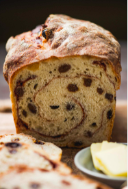

Cinnamon Raisin Sourdough

Ingredients
- 50g bubbly, active starter
- 365g warm water
- 480g bread flour
- 20g whole wheat flour
- 9g fine sea salt
Fillings
- 65g raisins
- 65g walnuts
- 50g sugar
- 6g cinnamon
Process
- Whisk starter and water together in large bowl with a fork.
- Add flour and salt, combine until stiff dough forms.
- Cover with damp towel and let rest for 30 minutes to an hour.
- While dough resting, soak raisins and walnuts in just enough warm water to cover. Drain well before use.
- Add raisins and nuts to the bowl.
- Gently knead fillings into dough to incorporate, about 1 minute.
- Bulk rise - Cover the bowl with damp towel and let rise at room temperature until double in size. About 8-10 hours in 70 degrees.
- Dump dough onto lightly floured surface and let rest for 10-15 minutes.
- Line a 10-inch oval proofing basket with towel and dust with flour.
- Combine sugar and cinnamon in a small bowl and set aside.
- Gently stretch dough into long rectangle, lightly brush surface of dough with water.
- Evenly sprinkle cinnamon-sugar mixture over the top, leaving 2-inch border top and bottom, and 1-inch border around sides.
- With short end facing you, roll dough into a log, pinching ends to seal. Place in basket, seam side up.
- Second rise - Cover dough and let rest 30 minutes to 1 hour.
- Preheat oven to 450 degrees and cut parchment paper to fit baking pot.
- Place parchment over dough and turn basket to release onto paper.
- Make 2-3 diagonal shallow cuts (scores) into surface of dough with small knife.
- Transfer into baking pot.
- Bake covered for 20 minutes, then uncovered for 40 minutes.
- Remove loaf to wire rack and cool for 1 hour before slicing.